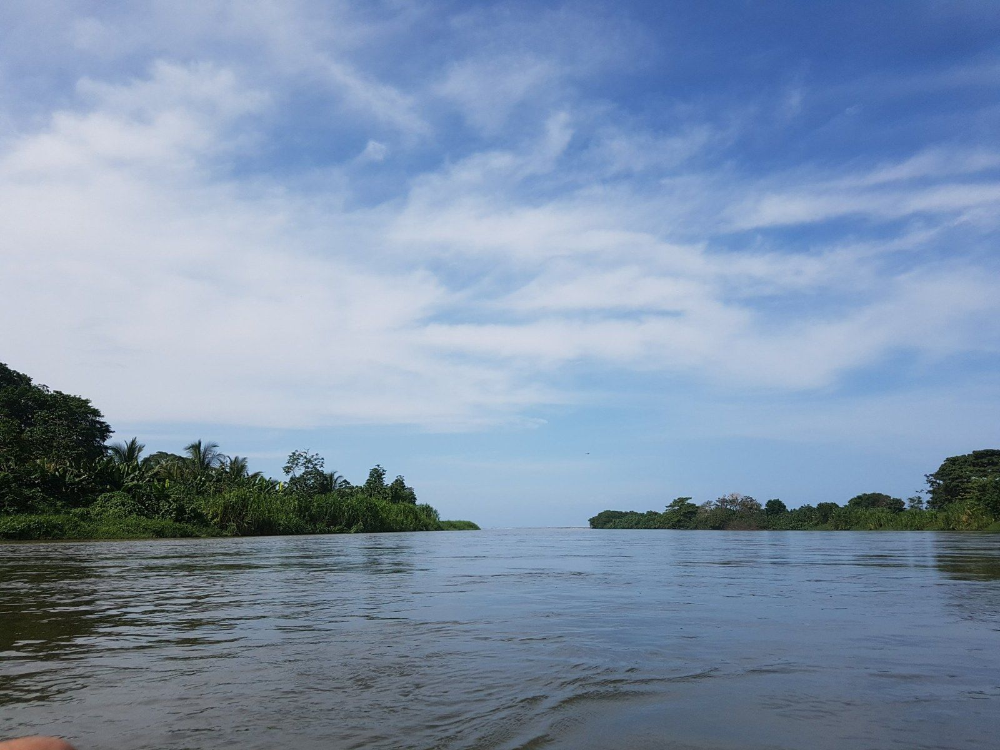
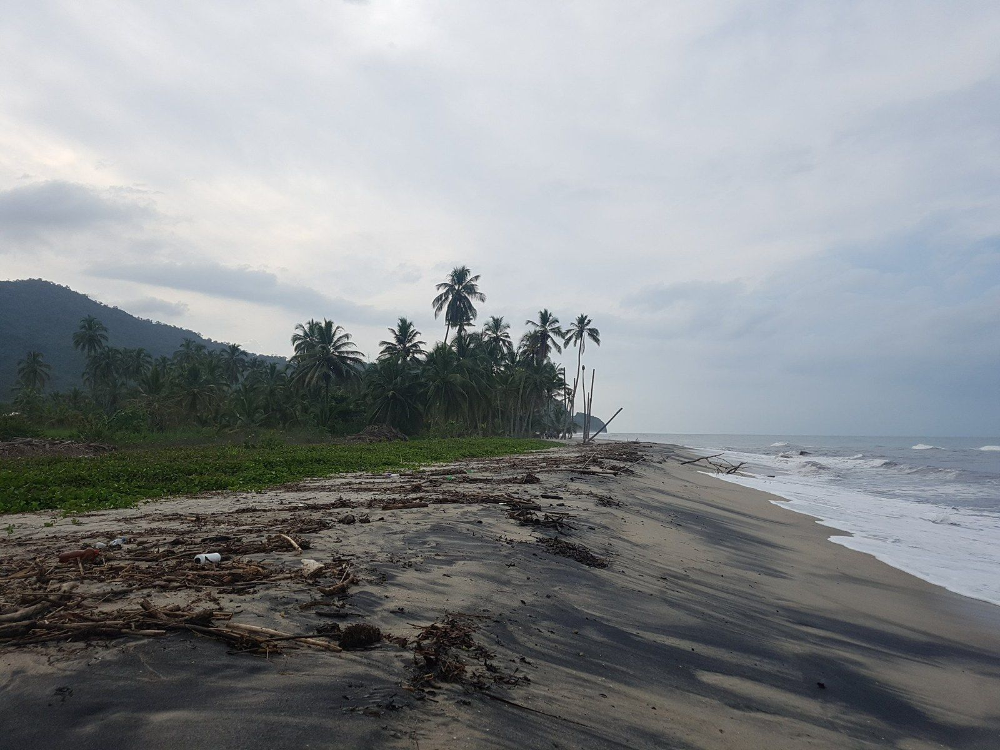

Colombia · Palomino
Palomino, Colombia in 2026: the bridge, the bus, river tubing and swimming safety
I spent one day in Palomino, on November 28, 2017: a float down the river, a long walk along an empty beach, and fishermen at sunset. That was nine years ago, so this page is partly what I remember and photographed, and partly what I checked again in November 2026. The checked facts are marked with a source and a date.
My day
Palomino is a small village on the Caribbean coast, on the edge of La Guajira, where a river reaches the sea and long beaches run on both sides. I left Minca that morning, and by 12:45 I was already floating down the river on a tube, between green banks and brown water. In the afternoon I walked along the shore, away from the village, for about an hour. I do not remember where I slept, what I paid for the river or the room, or the name of any place I stopped at, and I have no photos from the next day, so I do not know where I went.



What to check before you go (November 2026)
- The road and the bridge. The bridge over the Mendihuaca River, on the main road between Santa Marta and Palomino, collapsed on February 3, 2026 during heavy rain, and the road was closed (Infobae, February 3, 2026). The detour through Valledupar stretched the Santa Marta to Riohacha trip from about two and a half hours to about six (RCN, February 2026). A modular steel bridge installed by Army engineers opened on March 31, 2026, and traffic between Magdalena and La Guajira resumed that day (El Espectador, March 31, 2026; El Universal, March 31, 2026). I searched again in November 2026 and found nothing newer about the bridge, so ask your driver or your hostel before you set out.
- The bus. A guide updated in December 2025 says the public bus from the Sierra Mar office in Santa Marta to Palomino costs about 12,000 pesos and takes about two hours, and that it drops you on the main road near a D1 supermarket, from where most places to stay are an easy walk (Travelers and Dreamers, updated December 24, 2025). The same guide warns that fares change often.
- River tubing. A Blu Radio article says the float takes about one to two hours depending on the flow. You are taken by motorbike or truck to a higher point on the river, walk briefly through the forest, and float down to where the river meets the sea. It gives a price of 40,000 to 70,000 pesos a person, depending on the operator and the transport to the start (Blu Radio, March 15, 2025). After heavy rain a river like this can run fast, so ask in the village before you go.
- Swimming in the sea. On January 1, 2023 a German tourist died at the beach in Palomino. The police said she apparently drowned after entering the sea outside the hours set by the municipality of Dibulla, which allow swimming from 6:00 to 17:00. Residents and tourists said the beach needs more lifeguards (Noticias Caracol, January 2, 2023). I did not find whether that rule is still in force or how many lifeguards the beach has now. Ask locally, and do not swim at night or when the sea is rough.
- The beach itself. A report from February 16, 2026 says the sea removed about 60 metres of sand from the beach at Palomino after the heavy rains (RCN, February 16, 2026). I did not check how the beach looks today.
What I could not check
I could not find an official source for the bus fare, the bus times or the swimming hours, so the numbers above come from one guide and from the news. I also do not know what I paid in 2017 or which operator I used. Treat these as a guide and confirm them locally.
Is it worth it?
From one day, I can only say what I saw: a slow river, a very quiet beach, and a sea that I watched from the sand and did not swim in. Go if you want a slow day by the water, check the road first, and respect the sea.
The full chapter, with all my photos from that day, is in Members.